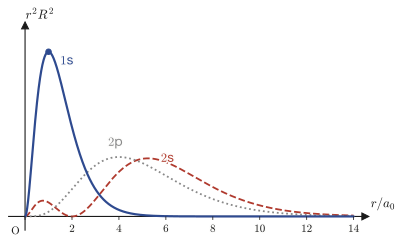
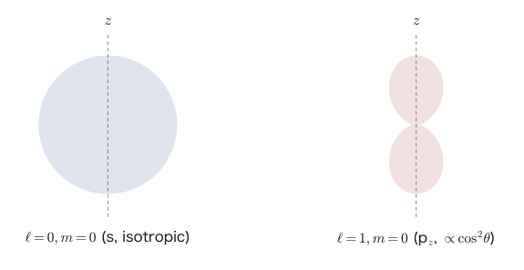

Chapter 48The Schrödinger Equation for the Hydrogen Atom (Spherical Coordinates)
In Chapter 45 we treated an electron in a box (Cartesian coordinates), in Chapter 46 the harmonic oscillator, and in Chapter 47 problems in cylindrical and polar coordinates, and each time we have confirmed the same “pattern” once again: “reduce the equation to ordinary differential equations by separation of variables → use the Frobenius series method → quantum numbers emerge from the boundary conditions (or from the condition that the solution not diverge as r→∞) → the energy is quantized.” In this chapter, as the culmination of this pattern, we apply it to the most famous problem in quantum mechanics—the hydrogen atom. It is the simplest atom, in which a single electron moves around a single proton.
What makes the hydrogen atom special is that the potential is given by the spherically symmetric Coulomb attraction $V(r)=-\dfrac{1}{4\pi\varepsilon_0}\dfrac{e_0^2}{r}$, and, moreover, that the Schrödinger equation separates completely in spherical coordinates and can therefore be solved exactly. The result of the solution explains, in complete mathematical form, where the “electron shells,” the “1s orbital, 2s orbital, 2p orbital, …,” and the “principal quantum number $n$” that you memorized by rote in high school chemistry and physics come from. The energy-level formula $E_n=-\dfrac{m_ee_0^4}{8\varepsilon_0^2h^2}\cdot\dfrac1{n^2}$ that we finally obtain agrees exactly with the formula that Bohr derived in 1913 from the old quantum theory (the postulate, imposed without justification, that an electron can occupy only certain circular orbits)—but this time no such unjustified postulate is used at all: the formula follows solely from a single partial differential equation, the Schrödinger equation, and the natural requirement that “the wave function must not diverge at infinity.”
Along the way, almost all of the tools that have appeared in this book so far are put to work—the Frobenius series method (Chapter 39), Legendre's differential equation (Chapter 40), Bessel functions and Laguerre polynomials (Chapter 41), the Laplacian in spherical coordinates (Chapter 44), the formulation of the Schrödinger equation itself (Chapter 45), and the “pattern” of energy quantization by the Frobenius series method (Chapter 46). In a sense, this chapter is the “graduation project” of all the techniques we have learned so far. It is a somewhat long chapter, but please read on one step at a time, without skipping any of the steps between one line and the next.
- Separate the variables of the Schrödinger equation in spherical coordinates as $\psi=R(r)\Theta(\theta)\bar\Phi(\varphi)$ and, writing the separation constants as $\ell(\ell+1)$ and $m^2$, decompose it into three ordinary differential equations: the radial, zenith-angle, and azimuthal equations (as a practice example, we solve the infinite spherical well potential)
- Apply the Frobenius series method to the radial equation, choose $\lambda=\ell$ (finite at the origin) from the indicial equation, and identify the series as the half-integer-order Bessel function $J_{\ell+1/2}$
- Carry out the same separation of variables under the Coulomb potential of the hydrogen atom, and transform the radial equation into a more manageable form by the substitution $R(r)=S(r)/r$
- Recognize the asymptotic form $S\sim e^{-Kr}$ as $r\to\infty$, set $S=X(r)e^{-Kr}$, and, by the Frobenius series method, obtain from the indicial equation the exponent $\lambda=\ell+1$ (finite at the origin)
- If the series continued indefinitely, the wave function would diverge; hence the principal quantum number $n$ appears as the condition for the series to terminate after finitely many terms (to become a polynomial), and this leads to the constraint $\ell\le n-1$ on the azimuthal quantum number $\ell$
- Expressing the radial wave function in terms of the associated Laguerre polynomials, and deriving the energy levels of the hydrogen atom, $E_n=-\dfrac{m_ee_0^4}{8\varepsilon_0^2h^2n^2}=-\dfrac{13.6\,\text{eV}}{n^2}$ (in agreement with Bohr's formula)
- Transform the zenith-angle equation into the associated Legendre differential equation by the substitution $x=\cos\theta$, and find its solutions in terms of the associated Legendre functions
- The ranges of values taken by the three quantum numbers—the principal quantum number $n$, the azimuthal quantum number $\ell$, and the magnetic quantum number $m$—namely $\ell\le n-1$ and $-\ell\le m\le\ell$; the correspondence with orbitals such as 1s, 2s, and 2p; and the degree of degeneracy $n^2$ of the energy levels
Source notes: Yasuhide Mochizuki, Mathematics Notes: Partial Differential Equations, pp. 52–60.
48.1 The Schrödinger Equation in Spherical Coordinates and Separation of Variables—The Example of the Infinite Spherical Well Potential
First, we prepare one tool that will be used throughout this chapter. When the position of the electron is expressed in spherical coordinates $(r,\theta,\varphi)$ ($r\ge0$: the distance from the origin, $\theta\in[0,\pi]$: the zenith angle, $\varphi\in[0,2\pi)$: the azimuthal angle), the Laplacian $\nabla^2$ takes the following form (a restatement of the result derived in Chapter 44).
\begin{equation} \nabla^2=\frac{1}{r^2}\pdiff{}{r}\!\left(r^2\pdiff{}{r}\right)+\frac{1}{r^2\sin\theta}\pdiff{}{\theta}\!\left(\sin\theta\pdiff{}{\theta}\right)+\frac{1}{r^2\sin^2\theta}\pdiff{^2}{\varphi^2} \label{eq:48-laplacian} \end{equation}What we want to solve in this chapter is the time-independent Schrödinger equation (the three-dimensional version of the equation derived in Section 45.2)
\begin{equation} -\frac{\hbar^2}{2m_e}\nabla^2\psi+V\psi=E\psi \label{eq:48-tise-general} \end{equation}in the case where the potential $V$ is determined only by the distance $r$ from the origin (independent of the angles $\theta,\varphi$)—this is called a central potential. For a central potential, regardless of the specific form of $V$, the latter half of the procedure of separation of variables (the parts for the zenith angle and the azimuthal angle) is exactly the same. To get a feel for this, in this section we first solve an example simpler than the hydrogen atom—the infinite spherical well potential, which confines the electron inside a sphere of radius $a$. You should be able to confirm that the difference from the Coulomb potential of the hydrogen atom, which we treat from the next section on, appears only in the radial equation.
Definition 48.1: Infinite spherical well potential
$$ V(r)=\begin{cases}0 & (0\le r\le a)\\ \infty & (r\gt a)\end{cases} $$That is, this is the potential whose potential energy is $0$ inside the sphere of radius $a$ centered at the origin (the same as for a free electron) and infinite outside. You may think of it as the infinite square well potential of Chapter 45 (a one-dimensional wall) replaced by a three-dimensional sphere. Since $\psi\equiv0$ outside the well (for the same reason as in Chapter 45—no particle can exist inside an infinite potential), the boundary condition is expressed as the condition that the wave function takes the value $0$ on the surface of the sphere:
$$ \psi(a,\theta,\varphi)=0 $$Also, since $\theta,\varphi$ are angles, we impose the periodicity condition $\psi(r,\theta,0)=\psi(r,\theta,2\pi)$, which says that going once around in $\varphi$ brings us back to where we started.
Inside the sphere ($0\le r\le a$, $V=0$), Eq. \eqref{eq:48-tise-general} becomes
\begin{equation} \frac{1}{r^2}\pdiff{}{r}\!\left(r^2\pdiff{\psi}{r}\right)+\frac{1}{r^2\sin\theta}\pdiff{}{\theta}\!\left(\sin\theta\pdiff{\psi}{\theta}\right)+\frac{1}{r^2\sin^2\theta}\pdiff{^2\psi}{\varphi^2}+\frac{2m_e}{\hbar^2}E\psi=0 \label{eq:48-well-pde} \end{equation}We now use the method of separation of variables once again—the strategy, used in Chapter 43 for the wave equation and the heat equation and in Chapter 45 for the Schrödinger equation itself, of assuming that a function of several variables can be represented not approximately but exactly as a product of functions of a single variable each. Let $\psi(r,\theta,\varphi)=R(r)\Theta(\theta)\bar\Phi(\varphi)$ (the overbar in $\bar\Phi$ follows the notation of the original notes and serves to avoid confusion with a normalization constant that appears later).
Derivation: Decomposition into three ordinary differential equations
Substituting $\psi=R\Theta\bar\Phi$ into Eq. \eqref{eq:48-well-pde}, the derivatives involving only $r$ act on $R$, the derivatives involving only $\theta$ act on $\Theta$, and the derivatives involving only $\varphi$ act on $\bar\Phi$ (within a product, the factors other than the one being differentiated can be pulled out as constants).
$$ \frac{\Theta\bar\Phi}{r^2}\diff{}{r}\!\left(r^2\diff{R}{r}\right)+\frac{R\bar\Phi}{r^2\sin\theta}\diff{}{\theta}\!\left(\sin\theta\diff{\Theta}{\theta}\right)+\frac{R\Theta}{r^2\sin^2\theta}\diff{^2\bar\Phi}{\varphi^2}+\frac{2m_e}{\hbar^2}ER\Theta\bar\Phi=0 $$Dividing both sides by $R\Theta\bar\Phi$ (we may assume this is $\neq0$) and then multiplying everything by $r^2$, we obtain
$$ \frac{1}{R}\diff{}{r}\!\left(r^2\diff{R}{r}\right)+\frac{1}{\Theta\sin\theta}\diff{}{\theta}\!\left(\sin\theta\diff{\Theta}{\theta}\right)+\frac{1}{\bar\Phi\sin^2\theta}\diff{^2\bar\Phi}{\varphi^2}+\frac{2m_e}{\hbar^2}Er^2=0 $$The first term and part of the fourth term ($\dfrac{2m_e}{\hbar^2}Er^2$) are expressions in $r$ alone, the second term is an expression in $\theta$ alone, and the third term is an expression in $\varphi$ alone. So we collect the parts involving $r$ on the left-hand side and move the parts involving $\theta,\varphi$ to the right-hand side:
$$ \frac{1}{R}\diff{}{r}\!\left(r^2\diff{R}{r}\right)+\frac{2m_e}{\hbar^2}Er^2=-\frac{1}{\Theta\sin\theta}\diff{}{\theta}\!\left(\sin\theta\diff{\Theta}{\theta}\right)-\frac{1}{\bar\Phi\sin^2\theta}\diff{^2\bar\Phi}{\varphi^2} $$Now the left-hand side is a function of $r$ only and the right-hand side is a function of $\theta,\varphi$ only. Since the two sides, whose variables are completely independent of each other, are nevertheless equal, both sides must equal the same constant, which depends on none of $r,\theta,\varphi$. For a reason we will see later, we write this constant as $\ell(\ell+1)$.
Math Note: Why do we write the separation constant as $\ell(\ell+1)$?
We could simply write the separation constant naively as, say, $\mu$, but when we later solve the equation for the zenith angle (Section 48.4), the condition for a solution to exist comes out as follows: the constant must be a number “of the form $\mu=\ell(\ell+1)$ ($\ell=0,1,2,\dots$).” In other words, since in the end only numbers of the form $\ell(\ell+1)$ are allowed anyway, writing the constant in that form from the start makes the later formulas cleaner (in Legendre's differential equation in Chapter 40, too, we wrote the separation constant as $\ell(\ell+1)$ for exactly the same reason). Note that $\ell$ (the lowercase letter ell) will later become a nonnegative integer called the azimuthal quantum number.
In the right-hand expression, we now separate the factors $\Theta,\bar\Phi$ from each other. Multiplying both sides of the equation for the right-hand side ($-\dfrac1{\Theta\sin\theta}\diff{}{\theta}\!\left(\sin\theta\diff\Theta\theta\right)-\dfrac1{\bar\Phi\sin^2\theta}\diff{^2\bar\Phi}{\varphi^2}=\ell(\ell+1)$) by $\sin^2\theta$ and rearranging, we obtain
$$ \frac{\sin\theta}{\Theta}\diff{}{\theta}\!\left(\sin\theta\diff\Theta\theta\right)+\ell(\ell+1)\sin^2\theta=-\frac{1}{\bar\Phi}\diff{^2\bar\Phi}{\varphi^2} $$Now the left-hand side is an expression in $\theta$ alone and the right-hand side is an expression in $\varphi$ alone. By the same argument, this too must be a constant. We write this constant as $m^2$ ($m$ will later become an integer called the magnetic quantum number. The reason for writing the constant as $m^2\ (\ge0)$ is the expectation that the general solution of the azimuthal equation $\bar\Phi''+m^2\bar\Phi=0$ will be the oscillatory solution $e^{\pm im\varphi}$—since, as described later, a periodic boundary condition is imposed). Expanding the left-hand side $\dfrac{\sin\theta}{\Theta}\diff{}{\theta}\!\left(\sin\theta\diff\Theta\theta\right)$ by the product rule gives $\sin^2\theta\diff{^2\Theta}{\theta^2}+\sin\theta\cos\theta\diff\Theta\theta$ (note the first-derivative term in $\theta$), so, putting the above together, we obtain the following three ordinary differential equations.
\begin{equation} r^2\diff{^2R}{r^2}+2r\diff Rr+\left(\varepsilon r^2-\ell(\ell+1)\right)R=0\qquad\left(\varepsilon:=\frac{2m_eE}{\hbar^2}\right) \label{eq:48-well-radial} \end{equation} \begin{equation} \sin^2\theta\diff{^2\Theta}{\theta^2}+\sin\theta\cos\theta\diff\Theta\theta+\left(\ell(\ell+1)\sin^2\theta-m^2\right)\Theta=0 \label{eq:48-theta-eq} \end{equation} \begin{equation} \diff{^2\bar\Phi}{\varphi^2}+m^2\bar\Phi=0 \label{eq:48-phi-eq} \end{equation}Note that the zenith-angle equation, Eq. \eqref{eq:48-theta-eq}, and the azimuthal equation, Eq. \eqref{eq:48-phi-eq}, make no use at all of the content of the potential $V(r)$—as long as the potential is central (depends only on $r$), these take the same form whatever its functional form. Therefore, we will solve these two equations together with the hydrogen atom case in Section 48.4, and in this section we solve only the part specific to the infinite spherical well potential, namely the radial equation, Eq. \eqref{eq:48-well-radial}.
Derivation: Frobenius series solution of the radial equation
Eq. \eqref{eq:48-well-radial} has a regular singular point at $r=0$ (Frobenius theory, Chapter 39), so we assume a series solution of the form $R(r)=\displaystyle\sum_{k=0}^{\infty}a_kr^{k+\lambda}$ ($a_0\neq0$). Substituting gives
$$ r^2\sum_{k=0}^{\infty}(k+\lambda)(k+\lambda-1)a_kr^{k+\lambda-2}+2r\sum_{k=0}^{\infty}(k+\lambda)a_kr^{k+\lambda-1}+\left(\varepsilon r^2-\ell(\ell+1)\right)\sum_{k=0}^{\infty}a_kr^{k+\lambda}=0 $$When the exponents of the first and second terms are aligned to $r^{k+\lambda}$, their degrees drop by 2, while the degree of the third term, $\varepsilon r^2(\cdots)$, rises by 2. Separating the lowest-degree terms (those with $k=0$ and $k=1$, the part not containing $\varepsilon$) from the remaining terms (those containing $\varepsilon$, which come in pairs of terms two steps apart), we obtain
$$ \{\lambda(\lambda+1)-\ell(\ell+1)\}a_0r^{\lambda}+\{(\lambda+1)(\lambda+2)-\ell(\ell+1)\}a_1r^{\lambda+1} +\sum_{k=0}^{\infty}\Big[\{(k+\lambda+2)(k+\lambda+3)-\ell(\ell+1)\}a_{k+2}+\varepsilon a_k\Big]r^{k+\lambda+2}=0 $$(The first and second terms are the expressions of the form $r^{k+\lambda-2}(k+\lambda)(k+\lambda+1)-\ell(\ell+1)r^{k+\lambda}$ written out for $k=0,1$—note that $k(k-1)+2k=k(k+1)$—and the terms with $k\ge2$ were renumbered by $k\to k+2$ and collected into the sum in the third term.) Since the coefficient of each of the powers $r^\lambda,r^{\lambda+1},r^{k+\lambda+2}$ must be $0$,
$$ \begin{cases} \{\lambda(\lambda+1)-\ell(\ell+1)\}a_0=0\\[4pt] \{(\lambda+1)(\lambda+2)-\ell(\ell+1)\}a_1=0\\[4pt] a_{k+2}=-\dfrac{\varepsilon\,a_k}{(k+2)(k+3+2\ell)}\qquad(k=0,1,2,\dots) \end{cases} $$(The last recurrence relation is the result of substituting $\lambda=\ell$ into $(k+\lambda+2)(k+\lambda+3)-\ell(\ell+1)$ and factoring: $(k+\ell+2)(k+\ell+3)-\ell(\ell+1)=(k+2)(k+2\ell+3)+\ell(\ell+1)-\ell(\ell+1)=(k+2)(k+3+2\ell)$—expanding to check, we get $(k+\ell+2)(k+\ell+3)=k^2+k(2\ell+5)+(\ell+2)(\ell+3)$, and subtracting $\ell(\ell+1)$ gives $k^2+k(2\ell+5)+2\ell+6=(k+2)(k+2\ell+3)$, which agrees). Since $a_0\neq0$, the first equation gives $\lambda(\lambda+1)=\ell(\ell+1)$, that is, $\lambda=\ell$ or $\lambda=-(\ell+1)$ (solve the quadratic equation $\lambda^2+\lambda-\ell(\ell+1)=0$ by the quadratic formula or by the factorization $(\lambda-\ell)(\lambda+\ell+1)=0$). If we choose $\lambda=-(\ell+1)$ (always negative, since $\ell\ge0$), then $R(r)\sim a_0r^{\lambda}$ ($r\to0$) diverges at the origin, which is unacceptable for a wave function. Therefore we choose
$$ \lambda=\ell $$Next, we set $a_1=0$ (when $\lambda=\ell$, the coefficient in the second equation is $(\ell+1)(\ell+2)-\ell(\ell+1)=2(\ell+1)\neq0$, so $a_1=0$ is required—if we took $a_1\ne0$, we would get a contradiction of the form (an expression whose coefficient is not $0$) $=0$). Then, by the recurrence relation, $a_1=a_3=a_5=\cdots=0$ (because every odd-indexed coefficient is determined as a constant multiple of the preceding odd-indexed coefficient), and only the even-indexed coefficients remain. Substituting $k=0,2,4,\dots$ in turn gives
$$ a_2=-\frac{\varepsilon}{2(3+2\ell)}a_0,\qquad a_4=-\frac{\varepsilon}{4(5+2\ell)}a_2=\frac{\varepsilon^2}{2\cdot4\cdot(3+2\ell)(5+2\ell)}a_0,\qquad a_6=-\frac{\varepsilon}{6(7+2\ell)}a_4=-\frac{\varepsilon^3}{2\cdot4\cdot6\cdot(3+2\ell)(5+2\ell)(7+2\ell)}a_0 $$and a pattern can be seen. In general, applying the recurrence relation $n$ times produces the sign $(-1)^n$, and the denominator contains $2\cdot4\cdots(2n)=2^nn!$ and $(3+2\ell)(5+2\ell)\cdots(2n+1+2\ell)$. By repeatedly using the property of the gamma function $\Gamma(z+1)=z\Gamma(z)$ (Chapter 32), the latter product can be written as $\Gamma\!\left(n+\ell+\tfrac32\right)\big/\Gamma\!\left(\ell+\tfrac32\right)\cdot2^n$ (the arguments increase in half-integer steps, so we divide by $2^n$ to make things come out right), and in the end
$$ a_{2n}=\frac{(-1)^n\varepsilon^n}{2^{2n}n!\,\Gamma\!\left(n+\ell+\tfrac32\right)}\cdot\Gamma\!\left(\ell+\tfrac32\right)a_0 $$(we may regard $\Gamma\!\left(\ell+\tfrac32\right)a_0$ anew as a constant and absorb it into $a_0$). Therefore we obtain
$$ R(r)=a_0\sum_{k=0}^{\infty}\frac{(-1)^k\varepsilon^k}{2^{2k}k!\,\Gamma\!\left(k+\ell+\tfrac32\right)}r^{2k+\ell} $$Finally, let us fit this to the form of the standard series for the Bessel function (Chapter 41),
$$ J_\nu(x)=\sum_{k=0}^{\infty}\frac{(-1)^k}{k!\,\Gamma(k+\nu+1)}\left(\frac{x}{2}\right)^{2k+\nu} $$Setting $\nu=\ell+\tfrac12$ and $x=\sqrt\varepsilon\,r$, we have $\left(\dfrac{x}{2}\right)^{2k+\nu}=\left(\dfrac{\sqrt\varepsilon}{2}\right)^{2k+\ell+\frac12}r^{2k+\ell+\frac12}$, and compared with the general term $r^{2k+\ell}$ of $R(r)$ this is off by an extra factor $r^{1/2}\left(\sqrt\varepsilon/2\right)^{2k+\ell+1/2}$. So we choose the constant $a_0$ of $R(r)$ anew so as to cancel this discrepancy exactly (this is a replacement of the constant, $a_0\to A\cdot2^{\ell+1/2}\varepsilon^{-(\ell+1/2)/2}$, which does not depend on $k$), and obtain
\begin{equation} R(r)=\frac{A}{\sqrt r}\sum_{k=0}^{\infty}\frac{(-1)^k}{k!\,\Gamma\!\left(k+\ell+\tfrac32\right)}\left(\frac{\sqrt\varepsilon}{2}r\right)^{2k+\ell+\frac12}=\frac{A}{\sqrt r}\,J_{\ell+\frac12}(\sqrt\varepsilon\,r) \label{eq:48-well-R-final} \end{equation}That is, the radial wave function inside the infinite spherical well potential is expressed by the Bessel function of half-integer order $J_{\ell+1/2}$. Since the order $\nu=\ell+\tfrac12$ is not an integer, this is a situation where the gamma function $\Gamma$ defined in Chapter 41 (a function extending the factorial $n!$ to non-integer arguments) is needed as it stands.
Intuition: Bessel functions of half-integer order = spherical Bessel functions
It is known that the Bessel function $J_{\ell+1/2}(x)$ of half-integer order can in fact be written using only elementary functions (trigonometric functions and powers of $x$). The version normalized into the form commonly used in physics is called the spherical Bessel function and is defined by $j_\ell(x):=\sqrt{\dfrac{\pi}{2x}}\,J_{\ell+1/2}(x)$. Let us check the case $\ell=0$ in the next example.
Example 48.1: Expressing the spherical Bessel function $j_0(x)$ in terms of elementary functions
Accepting that the Bessel function of half-integer order satisfies $J_{1/2}(x)=\sqrt{\dfrac{2}{\pi x}}\sin x$ (this identity itself can be verified by writing $\Gamma\!\left(k+\tfrac32\right)$ explicitly as a product of a factorial and half-integers and comparing with the Taylor series of $\sin x$—in this book we use only the result), find the spherical Bessel function $j_0(x)$ for $\ell=0$. Also, rewrite the radial wave function $R(r)$ of the infinite spherical well potential for $\ell=0$ (a spherically symmetric state, independent of the zenith angle and the azimuthal angle) using trigonometric functions.
Solution. Substituting $\ell=0$ into the definition $j_\ell(x)=\sqrt{\dfrac{\pi}{2x}}J_{\ell+1/2}(x)$ and using the given $J_{1/2}(x)=\sqrt{\dfrac2{\pi x}}\sin x$, we get
$$ j_0(x)=\sqrt{\frac{\pi}{2x}}\cdot\sqrt{\frac2{\pi x}}\sin x=\sqrt{\frac{\pi}{2x}\cdot\frac{2}{\pi x}}\,\sin x=\sqrt{\frac1{x^2}}\sin x=\frac{\sin x}{x} $$(the $\pi$ and the $2$ inside the square root cancel exactly). Therefore $j_0(x)=\dfrac{\sin x}{x}$. Next, substituting $\ell=0$ and $x=\sqrt\varepsilon\,r$ into Eq. \eqref{eq:48-well-R-final} gives $R(r)=\dfrac{A}{\sqrt r}J_{1/2}(\sqrt\varepsilon\,r)=\dfrac{A}{\sqrt r}\sqrt{\dfrac{2}{\pi\sqrt\varepsilon\,r}}\sin(\sqrt\varepsilon\,r)$. Collecting the radical factors in $r$, we have $\dfrac1{\sqrt r}\cdot\dfrac1{\sqrt r}=\dfrac1r$, so if we gather the constants into $A'$,
$$ R(r)=A'\,\frac{\sin(\sqrt\varepsilon\,r)}{r} $$The function $\sin(\sqrt\varepsilon\,r)/r$ is finite as $r\to0$ (by the Taylor expansion $\sin x\approx x$, $\sin(\sqrt\varepsilon r)/r\to\sqrt\varepsilon$), and if we require $R(a)=0$ at $r=a$, then $\sqrt\varepsilon\,a=\pi,2\pi,3\pi,\dots$, so we can see that the energy is quantized in exactly the same form as in the cylindrical problem of Chapter 47.
Why?: From here on the method is the same as in the previous chapter
In the original notes, the computation comes to a stopping point once the radial solution $R(r)=\dfrac{A}{\sqrt r}J_{\ell+1/2}(\sqrt\varepsilon\,r)$ has been obtained. The procedure of imposing the boundary condition $R(a)=0$ to quantize the energy $\varepsilon$ (and hence $E$) is exactly the same as the procedure we carried out in Chapter 47 for the infinite cylindrical well potential—finding $\alpha=\lambda_m(l')$ such that $J_m(\alpha)=0$ (a zero of the Bessel function) and setting $\sqrt\varepsilon\,a=\lambda_m(l')$. (The only difference this time is that, instead of the integer order $m$, we use the zeros of the Bessel function of half-integer order $\ell+\tfrac12$.) Assembling the complete solution by combining it with the equations for the zenith-angle and azimuthal directions, Eqs. \eqref{eq:48-theta-eq} and \eqref{eq:48-phi-eq}, will be done for the hydrogen atom (Section 48.4), where the same equations play the leading role. Starting with the next section, we finally move on to the hydrogen atom, the subject of this chapter—the case where the potential is not $V=0$ but the Coulomb attraction.
48.2 The Hydrogen Atom Potential and Separation of the Radial Equation
The hydrogen atom is a system in which one proton (charge $+e_0$) is fixed at the origin and one electron (charge $-e_0$) moves around it (since a proton is about 1836 times heavier than an electron, we may approximate the proton as being at rest at the origin—a refinement of this approximation is left to the exercises). By Coulomb's law (high school physics), the potential energy of the electron is as follows.
Definition 48.2: Coulomb potential of the hydrogen atom
\begin{equation} V(r)=-\frac{1}{4\pi\varepsilon_0}\cdot\frac{e_0^2}{r} \label{eq:48-hatom-V} \end{equation}Here $\varepsilon_0$ is the vacuum permittivity and $e_0$ is the elementary charge. The sign is negative because this is the potential of an attractive force by which the positive charge (proton) and the negative charge (electron) attract each other ($V\to0$ as $r\to\infty$, and $V\to-\infty$ as $r\to0$). Note that, unlike the infinite spherical well potential (Definition 48.1), $V$ is not a function taking only the two values $0$ and $\infty$; it is a function that varies smoothly with $r$.
Substituting Eq. \eqref{eq:48-hatom-V} into the time-independent Schrödinger equation (with the Laplacian in spherical coordinates, Eq. \eqref{eq:48-laplacian}), we obtain
\begin{equation} \frac{1}{r^2}\pdiff{}{r}\!\left(r^2\pdiff{\psi}{r}\right)+\frac{1}{r^2\sin\theta}\pdiff{}{\theta}\!\left(\sin\theta\pdiff{\psi}{\theta}\right)+\frac{1}{r^2\sin^2\theta}\pdiff{^2\psi}{\varphi^2}+\frac{2m_e}{\hbar^2}(E-V)\psi=0 \label{eq:48-hatom-pde} \end{equation}Multiplying both sides by $r^2$ to clear the denominators gives $\dfrac{\partial}{\partial r}\!\left(r^2\pdiff\psi r\right)+\dfrac1{\sin\theta}\pdiff{}\theta\!\left(\sin\theta\pdiff\psi\theta\right)+\dfrac1{\sin^2\theta}\pdiff{^2\psi}{\varphi^2}+\dfrac{2m_e}{\hbar^2}(E-V)r^2\psi=0$. Here we carry out a separation of variables that differs from the one in Section 48.1 by just one step—we factor the wave function into a radial part $R(r)$ and a candidate $Y(\theta,\varphi)$ for a spherical harmonic that combines the two angular variables (a single function containing both of the variables $\theta,\varphi$).
$$ \psi(r,\theta,\varphi)=R(r)\,Y(\theta,\varphi) $$Derivation: Substituting $\psi=RY$ and the product rule
Substituting, we obtain
$$ \pdiff{}{r}\!\left(r^2\diff{R}{r}Y\right)+\frac{1}{\sin\theta}\pdiff{}{\theta}\!\left(\sin\theta R\pdiff Y\theta\right)+\frac1{\sin^2\theta}R\pdiff{^2Y}{\varphi^2}+\frac{2m_e}{\hbar^2}(E-V)r^2RY=0 $$The first and second terms can be expanded with the product rule $(fg)'=f'g+fg'$. For the first term, keeping $Y$ outside as a constant independent of $r$, we use $\dfrac{\partial}{\partial r}\!\left(r^2\dfrac{dR}{dr}\right)=2r\dfrac{dR}{dr}+r^2\dfrac{d^2R}{dr^2}$ (the product rule with $f=r^2$, $g=dR/dr$), which gives $\left(2r\dfrac{dR}{dr}+r^2\dfrac{d^2R}{dr^2}\right)Y$. Similarly for the second term, treating $R$ as a constant independent of $\theta$ and using $\dfrac{\partial}{\partial\theta}\!\left(\sin\theta\dfrac{\partial Y}{\partial\theta}\right)=\cos\theta\dfrac{\partial Y}{\partial\theta}+\sin\theta\dfrac{\partial^2Y}{\partial\theta^2}$, we get $R\left(\cos\theta\pdiff Y\theta+\sin\theta\pdiff{^2Y}{\theta^2}\right)$. Putting these together, we obtain
$$ \left(r^2\diff{^2R}{r^2}+2r\diff Rr\right)Y+\frac R{\sin\theta}\!\left(\sin\theta\pdiff{^2Y}{\theta^2}+\cos\theta\pdiff Y\theta\right)+\frac1{\sin^2\theta}R\pdiff{^2Y}{\varphi^2}+\frac{2m_e}{\hbar^2}(E-V)r^2RY=0 $$Dividing this by $\psi=RY$ ($\neq0$) and substituting $V$ from Eq. \eqref{eq:48-hatom-V}, we get
\begin{equation} \frac1R\!\left(r^2\diff{^2R}{r^2}+2r\diff Rr\right)+\frac1Y\!\left(\pdiff{^2Y}{\theta^2}+\frac1{\tan\theta}\pdiff Y\theta\right)+\frac1{\sin^2\theta}\frac1Y\pdiff{^2Y}{\varphi^2}+\frac{2m_e}{\hbar^2}\!\left(E+\frac{1}{4\pi\varepsilon_0}\frac{e_0^2}{r}\right)r^2=0 \label{eq:48-hatom-sep} \end{equation}(We rewrote $\dfrac{\cos\theta}{\sin\theta}=\dfrac1{\tan\theta}$. Note also that, since $-V=+\dfrac1{4\pi\varepsilon_0}\dfrac{e_0^2}{r}$, the sign becomes plus.)
In Eq. \eqref{eq:48-hatom-sep}, we move the terms containing only $r$ (the first and fourth terms) to the left-hand side and the terms containing only $\theta,\varphi$ (the second and third terms) to the right-hand side. By exactly the same argument as in Section 48.1, both sides must be constant. We again denote this constant by $\ell(\ell+1)$ (the reason is also exactly the same as in the “Math Note” in Section 48.1—it is that the solution of the zenith-angle equation turns out in the end to be a number of this form).
\begin{equation} \begin{cases} \dfrac1R\!\left(r^2\diff{^2R}{r^2}+2r\diff Rr\right)+\dfrac{2m_e}{\hbar^2}\!\left(E+\dfrac{1}{4\pi\varepsilon_0}\dfrac{e_0^2}{r}\right)r^2=\ell(\ell+1)\\[8pt] \dfrac1Y\!\left(\pdiff{^2Y}{\theta^2}+\dfrac1{\tan\theta}\pdiff Y\theta\right)+\dfrac1{\sin^2\theta}\dfrac1Y\pdiff{^2Y}{\varphi^2}=-\ell(\ell+1) \end{cases} \qquad(\ell=0,1,2,\dots) \label{eq:48-hatom-const} \end{equation}The lower equation (the one containing only the angles) can be separated further as $Y(\theta,\varphi)=\Theta(\theta)\bar\Phi(\varphi)$. Substituting $\Theta\bar\Phi$ into the lower equation of Eq. \eqref{eq:48-hatom-const} and multiplying both sides by $\sin^2\theta$, we get
$$ \frac{\sin^2\theta}{\Theta}\!\left(\diff{^2\Theta}{\theta^2}+\frac1{\tan\theta}\diff\Theta\theta\right)+\ell(\ell+1)\sin^2\theta=-\frac1{\bar\Phi}\diff{^2\bar\Phi}{\varphi^2} $$so the left-hand side depends only on $\theta$ and the right-hand side only on $\varphi$ (we used the fact that the first and second derivatives with respect to $\theta$ of $Y=\Theta\bar\Phi$ act only on $\Theta$, treating $\bar\Phi$ as a constant, whereas the derivative with respect to $\varphi$ conversely acts only on $\bar\Phi$, treating $\Theta$ as a constant). For exactly the same reason as in Section 48.1, this too must be constant, and we denote that constant by $m^2$. The two equations obtained in this way are
$$ \sin^2\theta\diff{^2\Theta}{\theta^2}+\sin\theta\cos\theta\diff\Theta\theta+\left(\ell(\ell+1)\sin^2\theta-m^2\right)\Theta=0, \qquad \diff{^2\bar\Phi}{\varphi^2}+m^2\bar\Phi=0 $$and these are exactly the same equations as Eq. \eqref{eq:48-theta-eq} and Eq. \eqref{eq:48-phi-eq} (the zenith-angle and azimuthal-angle equations derived in Section 48.1 for the infinite spherical well potential). This is no accident—as announced in Section 48.1, for any central potential the zenith-angle and azimuthal-angle equations are common to all cases, independent of the form of the potential. Therefore we defer the solution of these equations to Section 48.4, and in this section we treat the remaining radial equation (the upper equation of Eq. \eqref{eq:48-hatom-const} with $R$ multiplied back in).
\begin{equation} r^2\diff{^2R}{r^2}+2r\diff Rr+\left\{\frac{2m_e}{\hbar^2}\!\left(E+\frac1{4\pi\varepsilon_0}\frac{e_0^2}{r}\right)r^2-\ell(\ell+1)\right\}R=0 \label{eq:48-hatom-radial} \end{equation}Eq. \eqref{eq:48-hatom-radial} has the same form as Eq. \eqref{eq:48-well-radial} (the radial equation for the infinite spherical well potential), except that the $\varepsilon r^2$ part is replaced by $\dfrac{2m_e}{\hbar^2}\!\left(E+\dfrac{1}{4\pi\varepsilon_0}\dfrac{e_0^2}{r}\right)r^2$—whether or not the Coulomb term $\dfrac{e_0^2}{4\pi\varepsilon_0 r}$ is present is the only difference between the two problems. However, because of this difference, a simple Frobenius series as in Section 48.1 (a power series in $r^{k+\lambda}$) cannot solve Eq. \eqref{eq:48-hatom-radial} directly (because of the $1/r$ term, the type of the singular point at $r=0$ changes). So we first make a substitution that makes the calculation easier to see through.
Derivation: The substitution $R(r)=S(r)/r$
Let $R(r)=\dfrac{S(r)}{r}$. Using the quotient rule (or the product rule with $R=S\cdot r^{-1}$), we get
$$ \diff Rr=-\frac{S}{r^2}+\frac1r\diff Sr,\qquad \diff{^2R}{r^2}=\frac{2S}{r^3}-\frac2{r^2}\diff Sr+\frac1r\diff{^2S}{r^2} $$(We only need to differentiate the first derivative once more: $\diff{}{r}\!\left(-\dfrac S{r^2}+\dfrac1r\diff Sr\right)=\dfrac{2S}{r^3}-\dfrac1{r^2}\diff Sr-\dfrac1{r^2}\diff Sr+\dfrac1r\diff{^2S}{r^2}=\dfrac{2S}{r^3}-\dfrac2{r^2}\diff Sr+\dfrac1r\diff{^2S}{r^2}$.) Using these, we obtain
\begin{equation} r^2\diff{^2R}{r^2}+2r\diff Rr =\left(\frac{2S}{r}-2\diff Sr+r\diff{^2S}{r^2}\right)+\left(-\frac{2S}{r}+2\diff Sr\right) =r\diff{^2S}{r^2} \label{eq:48-RS-identity} \end{equation}(The two terms $\dfrac{2S}{r}$ cancel each other, and so do the two terms $2\dfrac{dS}{dr}$, leaving only $r\dfrac{d^2S}{dr^2}$—this has also been verified with SymPy; see the verification at the end of the book). Therefore, replacing the first two terms on the left-hand side of Eq. \eqref{eq:48-hatom-radial} with the left-hand side of Eq. \eqref{eq:48-RS-identity}, we get
$$ r\diff{^2S}{r^2}+\left\{\frac{2m_e}{\hbar^2}\!\left(E+\frac1{4\pi\varepsilon_0}\frac{e_0^2}{r}\right)r^2-\ell(\ell+1)\right\}\frac Sr=0 $$(Here $R=S/r$ was substituted into the braces on the right as well.) Expanding the expression in the braces, we have $\dfrac{2m_e}{\hbar^2}\!\left(E+\dfrac{e_0^2}{4\pi\varepsilon_0 r}\right)r^2=\dfrac{2m_eE}{\hbar^2}r^2+\dfrac{2m_ee_0^2}{4\pi\varepsilon_0\hbar^2}r$ (note that $\dfrac1r\cdot r^2=r$), so that
$$ r\diff{^2S}{r^2}+\left\{\frac{2m_eE}{\hbar^2}r^2+\frac{2m_ee_0^2}{4\pi\varepsilon_0\hbar^2}r-\ell(\ell+1)\right\}\frac Sr=0 $$Finally, dividing both sides by $r$ (for the left term, $r\diff{^2S}{r^2}\big/r=\diff{^2S}{r^2}$; for the right term, the denominator gains one more factor of $r$ and becomes $r^2$), we get
\begin{equation} \diff{^2S}{r^2}+\left\{\frac{2m_eE}{\hbar^2}+\frac{m_ee_0^2}{2\pi\varepsilon_0\hbar^2}\cdot\frac1r-\frac{\ell(\ell+1)}{r^2}\right\}S=0 \label{eq:48-S-eq} \end{equation}(We simplified by canceling a common factor: $\dfrac{2m_ee_0^2}{4\pi\varepsilon_0\hbar^2}\big/r=\dfrac{m_ee_0^2}{2\pi\varepsilon_0\hbar^2}\cdot\dfrac1r$.)
Let us rewrite the coefficients of Eq. \eqref{eq:48-S-eq} in easier-to-read symbols. Since we are considering bound states of the electron (states in which the electron is captured by the nucleus and does not escape), we assume that the energy $E$ is negative (taking $V\to0$ at infinity as the reference, a bound electron has lower energy than one that would “escape freely”). We therefore define
\begin{equation} K:=\frac{\sqrt{-2m_eE}}{\hbar}\quad(K\gt0,\ \text{that is}\ K^2=-\frac{2m_eE}{\hbar^2}),\qquad \tau:=\frac{m_ee_0^2}{2\pi\varepsilon_0\hbar^2} \label{eq:48-Ktau-def} \end{equation}Then, since $\dfrac{2m_eE}{\hbar^2}=-K^2$, Eq. \eqref{eq:48-S-eq} can be written as
\begin{equation} \diff{^2S}{r^2}+\left\{-K^2+\frac\tau r-\frac{\ell(\ell+1)}{r^2}\right\}S=0 \label{eq:48-S-final} \end{equation}In the next section, we will solve this Eq. \eqref{eq:48-S-final} by the Frobenius series method.
Example 48.2: Checking that removing the Coulomb term gives back the free-particle equation
(a) In Eq. \eqref{eq:48-S-final}, formally let the elementary charge tend to zero, $e_0\to0$ (switching off the Coulomb attraction); then $\tau\to0$. Verify that in this case Eq. \eqref{eq:48-S-final} agrees with the equation obtained from Eq. \eqref{eq:48-well-radial} (Section 48.1, the radial equation for the infinite spherical well potential) by the substitution $R=S/r$. (b) Find the dimension (unit) of $\tau$ by comparing it with the dimensions of $K^2$ and $\ell(\ell+1)/r^2$.
Solution. (a) Substituting $\tau=0$ into Eq. \eqref{eq:48-S-final}, we get
$$ \diff{^2S}{r^2}+\left\{-K^2-\frac{\ell(\ell+1)}{r^2}\right\}S=0 $$On the other hand, substituting $R=S/r$ into Eq. \eqref{eq:48-well-radial} of Section 48.1 (with $\varepsilon:=2m_eE/\hbar^2$; as for the sign, there we assumed $E\gt0$, so $\varepsilon\gt0$) proceeds in exactly the same way as the calculation of Eq. \eqref{eq:48-RS-identity} in this section (the only difference being that there is no Coulomb term), and gives
$$ \diff{^2S}{r^2}+\left\{\varepsilon-\frac{\ell(\ell+1)}{r^2}\right\}S=0 $$These two equations coincide exactly if we read $\varepsilon\leftrightarrow-K^2$ (the symbol $\varepsilon=2m_eE/\hbar^2$ for the case $E\gt0$ and the symbol $-K^2=2m_eE/\hbar^2$ for the case $E\lt0$ are in fact just two ways of writing the same quantity $2m_eE/\hbar^2$). We have thus confirmed the natural result that if the Coulomb attraction is switched off, the hydrogen atom problem reduces to the infinite spherical well problem (in the version with no wall outside the sphere).
(b) Eq. \eqref{eq:48-S-final} adds up the three terms $K^2$, $\tau/r$, and $\ell(\ell+1)/r^2$, so all three must have the same dimension (unit) (quantities of different dimensions cannot be added—this is the principle of “dimensional analysis,” familiar from high school physics). Since $\ell(\ell+1)$ is a dimensionless number, the dimension of $\ell(\ell+1)/r^2$ is $[\text m^{-2}]$. Therefore the dimension of $K^2$ is also $[\text m^{-2}]$ (indeed, this can be checked from $K=\sqrt{-2m_eE}/\hbar$—with $[E]=\text J$ and $[m_eE]=\text{kg}\cdot\text J$, dividing by the dimension $\text J\cdot\text s$ of $\hbar$ and squaring gives $\text m^{-2}$, as can be confirmed in the same way as the dimensional analysis in Chapter 45). And $\tau/r$ must also have the same dimension $[\text m^{-2}]$, so the dimension of $\tau$ is $[\text m^{-1}]$ (the inverse of a length). That is, $\tau$ is a quantity with the dimension of an “inverse length” and $1/\tau$ one with the dimension of a “length”; in the next section, this will be connected to the Bohr radius (in a form involving the principal quantum number $n$).
48.3 Solving the Radial Equation—Associated Laguerre Polynomials and Energy Levels
In this section we solve Eq. \eqref{eq:48-S-final} (at the end of the previous section):
$$ \diff{^2S}{r^2}+\left\{-K^2+\frac\tau r-\frac{\ell(\ell+1)}{r^2}\right\}S=0 $$As in Section 48.1, we would like to use the Frobenius series method (Chapter 39), but this time a little ingenuity is needed—the reason is that unless we first investigate how this equation behaves as $r\to\infty$, we cannot tell whether the series will converge properly.
Derivation: Asymptotic behavior as $r\to\infty$
When $r$ is extremely large, both $\dfrac\tau r$ and $\dfrac{\ell(\ell+1)}{r^2}$ approach $0$ and become negligible ($1/r,1/r^2\to0$). Therefore, as $r\to\infty$ the equation becomes approximately
$$ \diff{^2S}{r^2}-K^2S=0 $$This is the second-order homogeneous equation with constant coefficients that we studied in Chapter 35, and the roots of its characteristic equation $\mu^2-K^2=0$ are $\mu=\pm K$ (real), so the general solution is $S(r)=Ae^{Kr}+Be^{-Kr}$. The wave function must not diverge at infinity (for the normalization $\int|\psi|^2r^2\dd r=1$ to be finite, $\psi$, hence $R=S/r$, hence $S$ itself must approach $0$ as $r\to\infty$), so the exponentially growing term $Ae^{Kr}$ is not allowed. Thus we must have $A=0$, and
$$ S(r)\fallingdotseq Be^{-Kr}\qquad(r\ \text{sufficiently large}) $$is the asymptotic form we obtain.
Why?: The reason we may set $S(r)=X(r)e^{-Kr}$
All we have found so far is the approximate behavior “when $r$ is large.” Taking this asymptotic form as a hint, however, the next move is to look for a solution of the form $S(r)=X(r)e^{-Kr}$ (where $X(r)$ is an unknown function) valid for all $r$. If $X(r)$ is a function that, as $r\to\infty$, changes only slowly compared with $e^{-Kr}$ (for example, a polynomial), then the manner in which $S(r)$ as a whole decays is governed by the exponential $e^{-Kr}$, which does not contradict the asymptotic form we just confirmed. This technique—factoring out the known asymptotic behavior and then applying the Frobenius series method afresh to the remaining unknown function—is a standard device in quantum mechanics that we also used when we solved the harmonic oscillator in Chapter 46 ($\psi=f(u)e^{-u^2/2}$).
Derivation: Substituting $S=Xe^{-Kr}$
Using the product rule for differentiation twice (the second derivative of $S=Xe^{-Kr}$), we obtain
$$ \diff{^2S}{r^2}=\diff{^2X}{r^2}e^{-Kr}-2K\diff Xre^{-Kr}+K^2Xe^{-Kr} $$(The first derivative is $\diff Sr=\diff Xre^{-Kr}-KXe^{-Kr}$; differentiating it once more gives $\diff{^2X}{r^2}e^{-Kr}-K\diff Xre^{-Kr}-K\diff Xre^{-Kr}+K^2Xe^{-Kr}$, and since $-K\diff Xre^{-Kr}$ appears twice, they combine into $-2K\diff Xre^{-Kr}$.) Substituting this into Eq. \eqref{eq:48-S-final}, we obtain
$$ \left(\diff{^2X}{r^2}-2K\diff Xr+K^2X\right)e^{-Kr}+\left\{-K^2X+\frac\tau rX-\frac{\ell(\ell+1)}{r^2}X\right\}e^{-Kr}=0 $$(these are the terms obtained by substituting $S=Xe^{-Kr}$ just as it stands). The two $K^2X$ terms cancel each other exactly; dividing by the common factor $e^{-Kr}\,(\neq0)$, we obtain
\begin{equation} \diff{^2X}{r^2}-2K\diff Xr+\left\{\frac\tau r-\frac{\ell(\ell+1)}{r^2}\right\}X=0 \label{eq:48-X-eq} \end{equation}This is the result (verified by actual substitution with SymPy—see the verification at the end of the book).
Eq. \eqref{eq:48-X-eq} still contains the dimensionful constants $K,\tau$, which makes its structure hard to see. We therefore introduce the dimensionless variable $\alpha:=2Kr$ (multiplying $r$ by $2K$, the inverse of a length, makes it dimensionless).
Derivation: Rewriting in terms of the dimensionless variable $\alpha=2Kr$
By the chain rule, $\diff Xr=\diff X\alpha\cdot\diff\alpha r=2K\diff X\alpha$ and $\diff{^2X}{r^2}=\diff{}{r}\!\left(2K\diff X\alpha\right)=2K\diff{}{\alpha}\!\left(\diff X\alpha\right)\cdot\diff\alpha r=(2K)^2\diff{^2X}{\alpha^2}$. Also, since $r=\alpha/(2K)$, we have $1/r=2K/\alpha$ and $1/r^2=4K^2/\alpha^2$. Substituting these into Eq. \eqref{eq:48-X-eq}, we obtain
$$ (2K)^2\diff{^2X}{\alpha^2}-2K\cdot2K\diff X\alpha+\left\{\tau\cdot\frac{2K}{\alpha}-\ell(\ell+1)\cdot\frac{4K^2}{\alpha^2}\right\}X=0 $$Dividing both sides by $(2K)^2=4K^2$, we obtain
\begin{equation} \diff{^2X}{\alpha^2}-\diff X\alpha+\left\{\frac{\tau}{2K}\cdot\frac1\alpha-\frac{\ell(\ell+1)}{\alpha^2}\right\}X=0 \label{eq:48-X-alpha-eq} \end{equation}This is the result (verified with SymPy).
Derivation: The Frobenius series method and the indicial equation
Eq. \eqref{eq:48-X-alpha-eq} has a regular singular point at $\alpha=0$, so we set $X(\alpha)=\displaystyle\sum_{k=0}^\infty a_k\alpha^{k+\lambda}$ ($a_0\neq0$) and substitute. Carrying this out in exactly the same way as the calculation in Section 48.1 (set the coefficient of the lowest-order term equal to $0$ to form the indicial equation, then shift the indices of the remaining terms to form the recurrence relation), we obtain
$$ \{\lambda(\lambda-1)-\ell(\ell+1)\}a_0\alpha^{\lambda-2} +\sum_{k=0}^\infty\left[(k+\lambda+\ell+1)(k+\lambda-\ell)a_{k+1}+\left\{\frac\tau{2K}-(k+\lambda)\right\}a_k\right]\alpha^{k+\lambda-1}=0 $$and setting the coefficient of each power equal to $0$ gives
\begin{equation} \{\lambda(\lambda-1)-\ell(\ell+1)\}a_0=0,\qquad (k+\lambda+\ell+1)(k+\lambda-\ell)a_{k+1}+\left\{\frac\tau{2K}-(k+\lambda)\right\}a_k=0 \label{eq:48-X-frobenius} \end{equation}Since $a_0\neq0$, we have $\lambda(\lambda-1)=\ell(\ell+1)$, that is, $\lambda=\ell+1$ or $\lambda=-\ell$ (from the factorization $\lambda^2-\lambda-\ell(\ell+1)=(\lambda-\ell-1)(\lambda+\ell)=0$). If we choose $\lambda=-\ell$, then $X(\alpha)\sim a_0\alpha^{-\ell}$ ($\alpha\to0$) diverges at the origin when $\ell\ge1$ (even for $\ell=0$, $R=S/r=Xe^{-Kr}/r$ will later acquire one more factor of $1/r$, so the behavior near the origin becomes even worse). Therefore, for the same reason that we chose $\lambda=\ell$ in Section 48.1, we choose
$$ \lambda=\ell+1 $$Substituting this into the recurrence relation, we have $(k+\lambda+\ell+1)=(k+2\ell+2)$ and $(k+\lambda-\ell)=(k+1)$, so we obtain the recurrence relation
\begin{equation} a_{k+1}=\frac{(k+\ell+1)-\dfrac\tau{2K}}{(k+1)(k+2\ell+2)}\,a_k\qquad(k=0,1,2,\dots) \label{eq:48-X-recurrence} \end{equation}(verified with SymPy).
Why?: The series must stop after finitely many terms
If the numerator $(k+\ell+1)-\tau/2K$ of Eq. \eqref{eq:48-X-recurrence} is not $0$ for any nonnegative integer $k$, the series continues indefinitely. Looking at the ratio $a_{k+1}/a_k$ for very large $k$, we have
$$ \frac{a_{k+1}}{a_k}=\frac{(k+\ell+1)-\tau/2K}{(k+1)(k+2\ell+2)}\xrightarrow[k\to\infty]{}\frac1{k+1} $$(the numerator is of degree one in $k$ and the denominator is of degree two in $k$, so the ratio becomes small on the order of $k/k^2=1/k$). On the other hand, the ratio of the coefficients of the exponential function $e^{\alpha}=\displaystyle\sum_{k=0}^\infty\dfrac{\alpha^k}{k!}$ is also $\dfrac{1/(k+1)!}{1/k!}=\dfrac1{k+1}$, which is exactly the same manner of decay. Since the convergence and divergence behavior of a series is the same when the coefficient ratios are the same (apart from differences in finitely many terms), if the series $F(\alpha)=\displaystyle\sum a_k\alpha^k$ continues indefinitely, it ends up behaving like $F(\alpha)\sim Ce^\alpha$ for large $\alpha$. Then we have
$$ X(\alpha)=\alpha^{\ell+1}F(\alpha)\sim\alpha^{\ell+1}e^{\alpha}, \qquad S(r)=X(r)e^{-Kr}\sim(2Kr)^{\ell+1}e^{2Kr}e^{-Kr}=(2Kr)^{\ell+1}e^{Kr} $$(where we restored $\alpha=2Kr$), and this diverges exponentially as $r\to\infty$—which contradicts the very basis on which we set $S(r)=X(r)e^{-Kr}$ in the first place (namely, that $e^{-Kr}$ dominates the decay). Therefore the series must stop somewhere; that is, for some nonnegative integer $k=k_{\max}$ we must have $a_{k_{\max}+1}=0$, so that all the later coefficients are $0$. Looking at the numerator of Eq. \eqref{eq:48-X-recurrence}, we see that this happens when
$$ (k_{\max}+\ell+1)-\frac\tau{2K}=0,\qquad\text{that is,}\qquad\frac\tau{2K}=k_{\max}+\ell+1 $$The right-hand side is the sum of the nonnegative integer $k_{\max}$ and the nonnegative integer $\ell$, plus $1$, so it is an integer greater than or equal to $\ell+1$. We define this integer as the quantity $n$, which from now on we shall call the principal quantum number.
This fixes the quantization condition in the radial direction—the relation between the energy $E$ (contained in $K$) and the principal quantum number $n$ and the azimuthal quantum number $\ell$. What remains is to write down explicitly the series $F(\alpha)=\displaystyle\sum_{k=0}^{n-\ell-1}a_k\alpha^k$ (which stops at $k_{\max}=n-\ell-1$, a polynomial with $n-\ell$ terms).
Derivation: Correspondence with the associated Laguerre differential equation
Let us substitute $X=\alpha^{\ell+1}F(\alpha)$ (the form of the solution for $\lambda=\ell+1$) into Eq. \eqref{eq:48-X-alpha-eq}. By the product rule, $\diff X\alpha=(\ell+1)\alpha^\ell F+\alpha^{\ell+1}F'$ and $\diff{^2X}{\alpha^2}=\ell(\ell+1)\alpha^{\ell-1}F+2(\ell+1)\alpha^\ell F'+\alpha^{\ell+1}F''$. Substituting these into Eq. \eqref{eq:48-X-alpha-eq} and dividing the whole equation by $\alpha^\ell$ ($\neq0$ in the range $\alpha>0$), we obtain the equation
\begin{equation} \alpha F''+\{2(\ell+1)-\alpha\}F'+\left\{\frac\tau{2K}-(\ell+1)\right\}F=0 \label{eq:48-laguerre-ode-instance} \end{equation}(verified by substitution with SymPy—see the verification at the end of the book). This is none other than an equation of the following form—the associated Laguerre differential equation. Here, using the same letter $m$ as the magnetic quantum number for the indices would be confusing, so in this book we use the letters $p,q$ (integers with $0\le p\le q$).
Theorem 48.1: Associated Laguerre differential equation (extension of the result of Chapter 41)
Let $p,q$ be integers satisfying $0\le p\le q$. The equation
\begin{equation} \alpha\diff{^2y}{\alpha^2}+(p+1-\alpha)\diff y\alpha+(q-p)y=0 \label{eq:48-laguerre-ode} \end{equation}has a polynomial solution of degree $q-p$, $y=a_0L_q^p(\alpha)$ ($a_0$: an arbitrary constant). Here $L_q^p(\alpha)$ is called the associated Laguerre polynomial, and is given by
\begin{equation} L_q^p(\alpha)=\sum_{k=p}^{q}\frac{(-1)^k(q!)^2}{(k-p)!\,k!\,(q-k)!}\,\alpha^{k-p} \label{eq:48-laguerre-def} \end{equation}(This is a generalization of the (non-associated) Laguerre polynomial $L_q(\alpha)$ treated in Chapter 41, which is the case $p=0$.)
Comparing Eq. \eqref{eq:48-laguerre-ode-instance} with Eq. \eqref{eq:48-laguerre-ode}, we find that $p+1=2(\ell+1)$ gives $p=2\ell+1$, and that $q-p=\dfrac\tau{2K}-(\ell+1)$ gives (using $n=\tau/2K$ from Eq. \eqref{eq:48-quantum-numbers}) $q=n-(\ell+1)+p=n-\ell-1+2\ell+1=n+\ell$. Therefore,
$$ F(\alpha)=a_0L_{n+\ell}^{2\ell+1}(\alpha) $$The condition “$0\le p\le q$” of Theorem 48.1 corresponds here to $0\le2\ell+1\le n+\ell$, that is, $\ell\le n-1$, which agrees exactly with the constraint of Eq. \eqref{eq:48-quantum-numbers} that we derived a moment ago from the termination condition of the series (this confirms that two independent arguments—the argument for avoiding the divergence of the series, and the condition under which the associated Laguerre polynomial can be defined—reach the same conclusion).
Putting the above together, let us assemble the solution in the radial direction.
Derivation: The radial wave function and the energy levels
Connecting in order $X(\alpha)=\alpha^{\ell+1}F(\alpha)=a_0\alpha^{\ell+1}L_{n+\ell}^{2\ell+1}(\alpha)$, $\alpha=2Kr$, $S(r)=X(r)e^{-Kr}$, and $R(r)=S(r)/r$, we obtain
\begin{equation} R(r)=a_0\,\frac{e^{-Kr}}{r}\,(2Kr)^{\ell+1}L_{n+\ell}^{2\ell+1}(2Kr) \label{eq:48-Rnl-raw} \end{equation}What remains is to determine $K$ explicitly. From Eq. \eqref{eq:48-Ktau-def} ($K=\sqrt{-2m_eE}/\hbar$, $\tau=m_ee_0^2/(2\pi\varepsilon_0\hbar^2)$) and Eq. \eqref{eq:48-quantum-numbers} ($n=\tau/2K$), we have
\begin{equation} K=\frac\tau{2n}=\frac{m_ee_0^2}{4\pi\varepsilon_0\hbar^2n} \label{eq:48-K-of-n} \end{equation}Substituting this back into $K^2=-2m_eE/\hbar^2$ gives the energy.
$$ E=-\frac{\hbar^2K^2}{2m_e}=-\frac{\hbar^2}{2m_e}\cdot\frac{m_e^2e_0^4}{16\pi^2\varepsilon_0^2\hbar^4n^2}=-\frac{m_ee_0^4}{32\pi^2\varepsilon_0^2\hbar^2}\cdot\frac1{n^2} $$Now, rewriting in terms of $h$ using the reduced Planck constant $\hbar=h/2\pi$ (hence $\hbar^2=h^2/4\pi^2$), we have $32\pi^2\hbar^2=32\pi^2\cdot h^2/4\pi^2=8h^2$, so
\begin{equation} E_n=-\frac{m_ee_0^4}{8\varepsilon_0^2h^2}\cdot\frac1{n^2}\qquad(n=1,2,3,\dots) \label{eq:48-energy} \end{equation}This is the formula for the energy levels, determined solely by the principal quantum number $n$ (independent of $\ell,m$!) (everything, including the rewriting $\hbar\to h$, has been verified with SymPy—see the verification at the end of the book).
Definition 48.3: Bohr radius
The following quantity, which has the dimension of length, is called the Bohr radius.
\begin{equation} a_0:=\frac{4\pi\varepsilon_0\hbar^2}{m_ee_0^2} \label{eq:48-bohr-radius} \end{equation}This symbol $a_0$ has nothing to do with the integration constant $a_0$ used in Sections 48.1 and 48.2 of this chapter (the same letter is simply used in different settings, a common collision of notation; the two can be told apart from the context). Comparing with Eq. \eqref{eq:48-K-of-n}, we see that this gives the simple relation $K=\dfrac1{na_0}$ (verified with SymPy).
Physical meaning: Agreement with Bohr's atomic model
Eq. \eqref{eq:48-energy} agrees exactly with the formula for the energy levels of the hydrogen atom that Niels Bohr derived in 1913 by making the ad hoc assumption that an electron can only move on circular orbits of particular radii (the assumption that the angular momentum is quantized as an integer multiple of $\hbar$). The derivation in this chapter uses no such assumption at all—all we used were the Schrödinger equation (the partial differential equation satisfied by the wave function) and the natural requirement that “the wave function must not diverge at infinity.” The “quantization” in which the energy can take only discrete values emerges, without any ad hoc assumption, as a mathematical necessity (the Frobenius series must terminate after finitely many terms)—and this is the heart of the leap from Bohr's old quantum theory to the Schrödinger equation (1926). Numerically, substituting $m_e=9.109\times10^{-31}\,\text{kg}$, $e_0=1.602\times10^{-19}\,\text{C}$, $\varepsilon_0=8.854\times10^{-12}\,\text{F/m}$, and $h=6.626\times10^{-34}\,\text{J\,s}$ into Eq. \eqref{eq:48-energy} with $n=1$ (computed with a calculator and SymPy), we obtain
$$ E_1=-13.606\ \text{eV},\qquad a_0=5.29177\times10^{-11}\ \text{m}=0.529\ \text{Å} $$(Here $1\,\text{eV}=1.602\times10^{-19}\,\text J$.) Both values agree with the values for the hydrogen atom that are known from experiment.
Substituting Eq. \eqref{eq:48-K-of-n} into Eq. \eqref{eq:48-Rnl-raw} and rewriting $2Kr=\dfrac{2r}{na_0}$, we obtain the final form of the radial wave function.
Radial wave functions and energy levels of the hydrogen atom (the normalization constant $a_0$—the integration constant of Sections 48.1 and 48.2—is determined by the normalization condition $\int_0^\infty R_{n\ell}(r)^2r^2\dd r=1$. The explicit forms are checked numerically in Examples 48.3 and 48.4).
\begin{equation} R_{n\ell}(r)=a_0\,\frac{e^{-r/na_0}}{r}\left(\frac{2r}{na_0}\right)^{\ell+1}L_{n+\ell}^{2\ell+1}\!\left(\frac{2r}{na_0}\right), \qquad E_n=-\frac{m_ee_0^4}{8\varepsilon_0^2h^2}\cdot\frac1{n^2} \label{eq:48-final-radial} \end{equation}Here the ranges of the quantum numbers are $n=1,2,3,\dots$ (principal quantum number) and $\ell=0,1,\dots,n-1$ (azimuthal quantum number).
Theorem 48.2: Radial quantization of the hydrogen atom
The bound states ($E\lt0$) of the hydrogen atom are specified by the pair of the principal quantum number $n=1,2,3,\dots$ and the azimuthal quantum number $\ell=0,1,\dots,n-1$. The radial wave function is $R_{n\ell}(r)$ of Eq. \eqref{eq:48-final-radial}, and the energy is $E_n=-\dfrac{m_ee_0^4}{8\varepsilon_0^2h^2n^2}$, which is determined by $n$ alone.
Example 48.3: Radial wave function of the ground state (the 1s orbital)
For $n=1$, $\ell=0$ (the ground state, called the “1s orbital” in chemistry), find the radial wave function $R_{10}(r)$ of Eq. \eqref{eq:48-final-radial}.
Solution. Substituting $n=1,\ell=0$ into Eq. \eqref{eq:48-laguerre-def} gives $p=2\ell+1=1$ and $q=n+\ell=1$, so the sum consists of the single term $k=1$ only.
$$ L_1^1(\alpha)=\frac{(-1)^1(1!)^2}{(1-1)!\,1!\,(1-1)!}\alpha^0=-1 $$This is a constant. Substituting it into Eq. \eqref{eq:48-final-radial} together with $n=1,\ell=0$, and using $\left(\dfrac{2r}{1\cdot a_0}\right)^{0+1}=\dfrac{2r}{a_0}$, we obtain
$$ R_{10}(r)=a_0\cdot\frac{e^{-r/a_0}}{r}\cdot\frac{2r}{a_0}\cdot(-1)=-2\,e^{-r/a_0} $$The sign (whether the factor is $-2$ or $+2$) is part of the freedom to multiply the wave function by a constant, which does not affect its physical meaning (the probability of finding the electron, $|\psi|^2$), so the essential result is $R_{10}(r)\propto e^{-r/a_0}$. This is exactly what you learned in high school chemistry: “in the 1s orbital, the probability of finding the electron decreases exponentially as you move away from the nucleus.” In fact, we verified with SymPy that $R_{10}(r)=2e^{-r/a_0}$ (the form with the normalization constant chosen) directly satisfies the radial equation (Eq. \eqref{eq:48-hatom-radial} with $\ell=0$, $E=E_1$ substituted) (see the verification at the end of the book).
Example 48.4: The associated Laguerre polynomial for $n=2,\ell=0$ (the 2s orbital)
For $n=2$, $\ell=0$, compute the associated Laguerre polynomial $L_{n+\ell}^{2\ell+1}(\alpha)=L_2^1(\alpha)$ explicitly from the defining formula, Eq. \eqref{eq:48-laguerre-def}.
Solution. We have $p=2\ell+1=1$ and $q=n+\ell=2$. The sum in Eq. \eqref{eq:48-laguerre-def} consists of the two terms $k=1,2$.
$$ k=1:\ \frac{(-1)^1(2!)^2}{(1-1)!\,1!\,(2-1)!}\alpha^{1-1}=\frac{-4}{1\cdot1\cdot1}=-4 $$ $$ k=2:\ \frac{(-1)^2(2!)^2}{(2-1)!\,2!\,(2-2)!}\alpha^{2-1}=\frac{4}{1\cdot2\cdot1}\alpha=2\alpha $$Therefore
$$ L_2^1(\alpha)=2\alpha-4 $$holds. Let us also check that this is a solution of Eq. \eqref{eq:48-laguerre-ode} of Theorem 48.1 ($p=1,q=2$: $\alpha y''+(2-\alpha)y'+y=0$). If $y=2\alpha-4$, then $y'=2$ and $y''=0$, so the left-hand side is $\alpha\cdot0+(2-\alpha)\cdot2+1\cdot(2\alpha-4)=(4-2\alpha)+(2\alpha-4)=0$, and it is indeed a solution (verified with SymPy).
Example 48.5: Degeneracy for $n=2$—the energies of the 2s and 2p orbitals are equal
For the hydrogen atom with $n=2$, list all the allowed values of the azimuthal quantum number $\ell$, find the corresponding energy $E_2$ for each, and confirm that it is the same regardless of the value of $\ell$.
Solution. Substituting $n=2$ into the constraint $\ell=0,1,\dots,n-1$ of Eq. \eqref{eq:48-final-radial}, we find that two values, $\ell=0,1$, are allowed ($\ell=0$: the 2s orbital; $\ell=1$: the 2p orbital—these too correspond to terms used in high school chemistry). Looking at Eq. \eqref{eq:48-energy}, we see that $E_n$ is determined by $n$ alone and does not contain $\ell$, so for both $\ell=0$ and $\ell=1$
$$ E_2=-\frac{m_ee_0^4}{8\varepsilon_0^2h^2}\cdot\frac1{2^2}=\frac{E_1}{4}=\frac{-13.606}{4}\ \text{eV}=-3.402\ \text{eV} $$—exactly the same value. This phenomenon, in which the energies coincide even though the azimuthal quantum numbers differ (that is, the shapes of the wave functions are completely different), is called degeneracy (the same word as for the degeneracy of the two-dimensional well potential in Chapter 45 and of the three-dimensional isotropic harmonic oscillator in Chapter 46). The property specific to the Coulomb potential of the hydrogen atom, that the energy does not depend on $\ell$, is called “accidental degeneracy” in the language of quantum mechanics to be introduced later (a degeneracy that arises from the special form of the Coulomb potential and does not occur for a general central potential).
Example 48.6: Energy differences between levels and degrees of degeneracy
Find the energies $E_n$ of the hydrogen atom for $n=1,2,3,4$ in electronvolts (eV). Also, for each $n$, find the total number of pairs of the azimuthal quantum number $\ell$ ($0\le\ell\le n-1$) and the magnetic quantum number $m$ (an integer with $-\ell\le m\le\ell$, as we shall confirm in the next section)—that is, the degree of degeneracy of that energy level.
Solution. Using $E_1=-13.606\,\text{eV}$ in Eq. \eqref{eq:48-energy}, we get
$$ E_1=-13.606\ \text{eV},\quad E_2=-3.402\ \text{eV},\quad E_3=-1.512\ \text{eV},\quad E_4=-0.850\ \text{eV} $$(computed from $E_n=E_1/n^2$ with a calculator; verified with SymPy and scipy). As for the degree of degeneracy, for a given $\ell$ ($0\le\ell\le n-1$) there are $2\ell+1$ possible values of $m$ ($-\ell,-\ell+1,\dots,\ell$). Therefore the total degree of degeneracy for a given $n$ is
$$ \sum_{\ell=0}^{n-1}(2\ell+1)=n^2 $$(this is the formula for the sum of an arithmetic progression, or the very high school mathematics formula that adding up the first $n$ odd numbers, starting from $1$, gives $n^2$—$1+3+5+\cdots+(2n-1)=n^2$). Concretely, $n=1$: $1^2=1$ (only $1$s), $n=2$: $2^2=4$ (one 2s and three 2p—$m=-1,0,1$), $n=3$: $3^2=9$, and $n=4$: $4^2=16$ (verified with SymPy for $n=1$ through $6$ that this agrees with the general formula). Figure 48.3 shows the energy-level diagram, including these degrees of degeneracy.
Finally, let us look at the radial probability distribution. The probability of finding the electron within the spherical shell at distance $r\sim r+\dd r$ from the nucleus is given by the quantity obtained by integrating $|\psi|^2$ over the angles, namely $r^2R_{n\ell}(r)^2\dd r$ (we used the volume element $\dd^3r=r^2\sin\theta\,\dd r\,\dd\theta\,\dd\varphi$—see Chapters 44 and 32). In Figure 48.4 we graph the normalized $r^2R_{n\ell}(r)^2$ (shown in atomic units, taking the Bohr radius $a_0$ as the unit) for three states: 1s ($n=1,\ell=0$), 2s ($n=2,\ell=0$), and 2p ($n=2,\ell=1$).

48.4 The Angular Solutions—Associated Legendre Functions and the Complete Wave Function
What remains is the zenith-angle equation, Eq. \eqref{eq:48-theta-eq}
$$ \sin^2\theta\diff{^2\Theta}{\theta^2}+\sin\theta\cos\theta\diff\Theta\theta+\left(\ell(\ell+1)\sin^2\theta-m^2\right)\Theta=0 $$and the azimuthal equation, Eq. \eqref{eq:48-phi-eq} ($\bar\Phi''+m^2\bar\Phi=0$). As we confirmed in Sections 48.1 and 48.2, these two equations are common to every central potential, so the results obtained here can be used as they are not only for the hydrogen atom but also for the infinite spherical well potential (Section 48.1).
Derivation: The substitution $x=\cos\theta$ and the associated Legendre differential equation
Eq. \eqref{eq:48-theta-eq} is an equation in the variable $\theta$, but $\sin\theta,\cos\theta$ appear mixed together, which makes it awkward to handle. So we set $x:=\cos\theta$ ($x\in[-1,1]$ when $\theta\in[0,\pi]$) and rewrite the equation, regarding $\Theta$ as a function of $x$. We have $\sin^2\theta=1-\cos^2\theta=1-x^2$, and by the chain rule,
$$ \diff\Theta\theta=\diff\Theta x\cdot\diff x\theta=(-\sin\theta)\diff\Theta x $$(where $\dfrac{dx}{d\theta}=\dfrac{d}{d\theta}\cos\theta=-\sin\theta$). Differentiating once more with respect to $\theta$, we obtain
$$ \diff{^2\Theta}{\theta^2}=\diff{}{\theta}\!\left(\diff\Theta\theta\right)=\diff{}{x}\!\left(\diff\Theta\theta\right)\cdot\diff x\theta=\diff{}{x}\!\left((-\sin\theta)\diff\Theta x\right)\cdot(-\sin\theta) =\left(\diff{^2\Theta}{x^2}\cdot(-\sin\theta)+\diff\Theta x\cdot(-\cos\theta)\right)\cdot(-\sin\theta) $$(Since we also treat $-\sin\theta$ as a function of $x$, we have $\dfrac{d}{dx}(-\sin\theta)=\dfrac{d}{dx}\left(-\sqrt{1-x^2}\right)=\dfrac{x}{\sqrt{1-x^2}}=\dfrac{\cos\theta}{\sin\theta}\cdot\dfrac{\sin\theta}{1}$, and if we keep track of the signs it ends up as $-\cos\theta$—here, instead of differentiating $\sin\theta=\sqrt{1-x^2}$ with respect to $x$, it is clearer to compute $\dfrac{d}{d\theta}(-\sin\theta)=-\cos\theta$ first and then use $\dfrac{d}{dx}=\dfrac1{-\sin\theta}\dfrac d{d\theta}$ via the chain rule. If we use only the result, we have)
$$ \diff{^2\Theta}{\theta^2}=\sin^2\theta\diff{^2\Theta}{x^2}-\cos\theta\diff\Theta x=(1-x^2)\diff{^2\Theta}{x^2}-x\diff\Theta x $$Substituting these into Eq. \eqref{eq:48-theta-eq}, and noting that $\dfrac{\cos\theta}{\sin\theta}\dfrac{d\Theta}{d\theta}=\dfrac x{\sin\theta}\cdot(-\sin\theta)\dfrac{d\Theta}{dx}=-x\dfrac{d\Theta}{dx}$ (to be used in the sense that $\sin\theta\cos\theta\dfrac{d\Theta}{d\theta}=\sin\theta\cdot x\cdot(-\sin\theta)\dfrac{d\Theta}{dx}=-x(1-x^2)\dfrac{d\Theta}{dx}$), we rearrange to get
$$ (1-x^2)\left\{(1-x^2)\diff{^2\Theta}{x^2}-x\diff\Theta x\right\}-x(1-x^2)\diff\Theta x+\left\{\ell(\ell+1)(1-x^2)-m^2\right\}\Theta=0 $$and canceling one common factor $(1-x^2)$ (in the range where $0\lt1-x^2$), we obtain
\begin{equation} (1-x^2)\diff{^2\Theta}{x^2}-2x\diff\Theta x+\left\{\ell(\ell+1)-\frac{m^2}{1-x^2}\right\}\Theta=0 \label{eq:48-legendre-assoc-ode} \end{equation}This is called the associated Legendre differential equation (it is a generalization of Legendre's differential equation that we studied in Chapter 40—the case $m=0$).
Theorem 48.3: Associated Legendre functions (Rodrigues's formula)
For $\ell=0,1,2,\dots$ and $m=0,1,\dots,\ell$, the solution of Eq. \eqref{eq:48-legendre-assoc-ode} is given by
\begin{equation} \Theta(x)=b_0\,(1-x^2)^{m/2}\diff{^m}{x^m}\left\{\frac1{2^\ell\ell!}\diff{^\ell}{x^\ell}(x^2-1)^\ell\right\} \label{eq:48-legendre-rodrigues} \end{equation}($b_0$: an arbitrary constant). The expression inside the braces is exactly the Legendre polynomial $P_\ell(x):=\dfrac1{2^\ell\ell!}\dfrac{d^\ell}{dx^\ell}(x^2-1)^\ell$ (Rodrigues's formula) that we studied in Chapter 40. That is, Eq. \eqref{eq:48-legendre-rodrigues} can be read as $\Theta(x)=b_0(1-x^2)^{m/2}\dfrac{d^mP_\ell}{dx^m}(x)$—the Legendre polynomial differentiated a further $m$ times and multiplied by the factor $(1-x^2)^{m/2}$.
Caution: The range of $m$ is $0\le m\le\ell$—why?
The expression in braces on the right-hand side of Eq. \eqref{eq:48-legendre-rodrigues}, $\{\cdots\}=P_\ell(x)$, is a polynomial of degree $\ell$ in $x$ ($(x^2-1)^\ell$ has degree $2\ell$, and differentiating it $\ell$ times lowers the degree by $\ell$). Differentiating a polynomial of degree $\ell$ a total of $m$ times gives identically $0$ when $m>\ell$ (for example, differentiating $x^2$ three times gives $0$). Therefore, in order to have $\Theta(x)\not\equiv0$ (a nontrivial solution), we must have $m\le\ell$. Moreover, the symbol $d^m/dx^m$ ($m$-fold differentiation) itself makes sense only for a nonnegative integer, $m=0,1,2,\dots$. From the above, Eq. \eqref{eq:48-legendre-rodrigues} can be used as it stands only in the case $0\le m\le\ell$.
On the other hand, unlike the zenith-angle equation, the azimuthal equation, Eq. \eqref{eq:48-phi-eq} ($\bar\Phi''+m^2\bar\Phi=0$), contains the separation constant only as $m^2$ (the square, not $m$ itself). That is, both Eq. \eqref{eq:48-theta-eq} and Eq. \eqref{eq:48-phi-eq} remain in exactly the same form when $m$ is replaced by $-m$. Therefore, if we replace $m$ by $|m|$ in Eq. \eqref{eq:48-legendre-rodrigues}, the same formula can be used as it is for negative integers $m$ ($-\ell\le m\le-1$) as well—the range of $m$ actually allowed is
$$ m=-\ell,-\ell+1,\dots,-1,0,1,\dots,\ell-1,\ell\qquad(2\ell+1\ \text{values}) $$This settles how the integer $m$, which we called the “magnetic quantum number” in Section 48.1, is actually restricted by the azimuthal quantum number $\ell$.
Math Note: On the sign convention (the Condon–Shortley phase)
Depending on the textbook or the software, the “associated Legendre function” is defined as $P_\ell^m(x):=(-1)^m(1-x^2)^{m/2}\dfrac{d^mP_\ell}{dx^m}(x)$, in which the sign $(-1)^m$ is appended to the right-hand side of Eq. \eqref{eq:48-legendre-rodrigues} (this sign convention is called the Condon–Shortley phase). This chapter follows the convention of the original notes (the sign $(-1)^m$ is not attached), but whether this sign is present has no effect at all on the physical meaning of the final wave function (the probability density $|\psi|^2$, the energy)—it is merely a freedom that gets absorbed into the sign of the normalization constant $b_0$ (or $b_0C_0$, which appears later). If, when comparing the formulas of this chapter with those of other textbooks, the signs appear to disagree, the difference in this convention is usually the cause.
Derivation: The azimuthal solution and the periodic boundary condition
Eq. \eqref{eq:48-phi-eq} ($\bar\Phi''+m^2\bar\Phi=0$, in the case $m\neq0$) is the constant-coefficient second-order homogeneous equation of Chapter 35, and from the roots $\mu=\pm im$ (purely imaginary) of the characteristic equation $\mu^2+m^2=0$, the general solution is
$$ \bar\Phi(\varphi)=C_0e^{im\varphi}+d_0e^{-im\varphi} $$Imposing the periodic boundary condition $\bar\Phi(0)=\bar\Phi(2\pi)$ ($\varphi$ is an angle, so after one full turn we return to the original position), we obtain $C_0+d_0=C_0e^{i2\pi m}+d_0e^{-i2\pi m}$. If $m$ is an integer, then $e^{\pm i2\pi m}=1$ (Euler's formula, Chapter 21), so this condition is satisfied automatically and cannot determine $C_0,d_0$. However, $e^{im\varphi}$ and $e^{-im\varphi}$ are independent solutions that are not constant multiples of each other (when $m\neq0$), so there is no need to keep both in the general solution—the term $d_0e^{-im\varphi}$ is contained in the term $C_0e^{im\varphi}$ with $m\to-m$ substituted (since we already allow $m$ to be any integer, positive or negative, we would be counting it twice). We may therefore take $d_0=0$.
The case $m=0$ must be checked separately. In this case Eq. \eqref{eq:48-phi-eq} becomes $\bar\Phi''=0$, and the general solution is not an exponential function but the linear function $\bar\Phi(\varphi)=A\varphi+B$. Substituting the periodic boundary condition $\bar\Phi(0)=\bar\Phi(2\pi)$ gives $B=2\pi A+B$, that is, $A=0$, so only $\bar\Phi(\varphi)=B$ (a constant) remains. This is the same conclusion as the one obtained by substituting $m=0$ directly into $\bar\Phi=C_0e^{im\varphi}$ ($e^{i0\cdot\varphi}=1$, a constant), and so we have confirmed that there is no need to treat the case $m=0$ specially.
Summarizing the above, we have
\begin{equation} \bar\Phi(\varphi)=C_0e^{im\varphi}\qquad(m=0,\pm1,\pm2,\dots) \label{eq:48-phi-final} \end{equation}for the azimuthal solution.
Multiplying together the solutions (i)–(iii) (radial, zenith-angle, and azimuthal), we complete the wave function of the hydrogen atom.
Definition 48.4: The wave function of the hydrogen atom (in the form containing spherical harmonics)
As the product of the radial part (Eq. \eqref{eq:48-final-radial}), the zenith-angle part (Eq. \eqref{eq:48-legendre-rodrigues}), and the azimuthal part (Eq. \eqref{eq:48-phi-final}), the complete wave function of the hydrogen atom is obtained as follows.
\begin{equation} \psi_{n\ell m}(r,\theta,\varphi)=R_{n\ell}(r)\,\Theta_{\ell m}(\theta)\,\bar\Phi_m(\varphi) \label{eq:48-full-wavefunction} \end{equation}Here the combination $\Theta_{\ell m}(\theta)\bar\Phi_m(\varphi)$ (once normalized) is called a spherical harmonic $Y_\ell^m(\theta,\varphi)$. According to the original notes, the normalization constants $a_0$ (of the radial part, the coefficient in Eq. \eqref{eq:48-final-radial}) and $b_0C_0$ (of the angular part) are determined concretely from the normalization condition $\displaystyle\int_0^\infty\!\int_0^\pi\!\int_0^{2\pi}|\psi|^2\,r^2\sin\theta\,\dd r\,\dd\theta\,\dd\varphi=1$ as
$$ a_0=\sqrt{\frac{2}{na_0^{\text{(Bohr)}}}\cdot\frac{(n-\ell-1)!}{2n\{(n+\ell)!\}^3}},\qquad b_0C_0=\sqrt{\frac{2\ell+1}{4\pi}\cdot\frac{(\ell-|m|)!}{(\ell+|m|)!}} $$(where $a_0^{\text{(Bohr)}}$ is the Bohr radius, Eq. \eqref{eq:48-bohr-radius}—a superscript note is attached so that it is not confused with the integration constant $a_0$ of the radial part). We do not go into the triple-integral computation that yields these normalization constants, since it is beyond the scope of this book, but for the cases $n=1,\ell=0$ and $n=2,\ell=1,m=0$ we confirmed by numerical integration that the normalization $\int|\psi|^2r^2\sin\theta\,\dd r\,\dd\theta\,\dd\varphi=1$ holds (see the verification at the end of the book).
Example 48.7: Checking the Legendre polynomials $P_0,P_1$
Using Rodrigues's formula $P_\ell(x)=\dfrac1{2^\ell\ell!}\dfrac{d^\ell}{dx^\ell}(x^2-1)^\ell$, find $P_0(x)$ and $P_1(x)$. Also verify that these correspond to the zenith-angle solution $\Theta(x)$ for $\ell=0,1$ and $m=0$ (Eq. \eqref{eq:48-legendre-rodrigues} with $m=0$).
Solution. $\ell=0$: Differentiating $0$ times means doing nothing, so $P_0(x)=\dfrac1{2^00!}(x^2-1)^0=\dfrac11\cdot1=1$. $\ell=1$: $P_1(x)=\dfrac1{2^11!}\dfrac{d}{dx}(x^2-1)=\dfrac12\cdot2x=x$. Therefore
$$ P_0(x)=1,\qquad P_1(x)=x $$(verified with SymPy). When $m=0$, Eq. \eqref{eq:48-legendre-rodrigues} becomes $\Theta(x)=b_0(1-x^2)^0\dfrac{d^0P_\ell}{dx^0}(x)=b_0P_\ell(x)$ (differentiating $m=0$ times = doing nothing, $(1-x^2)^{0}=1$), so for $\ell=0$ we have $\Theta(x)=b_0$ (a constant, independent of $x=\cos\theta$—spherically symmetric), and for $\ell=1$ we have $\Theta(x)=b_0x=b_0\cos\theta$. These correspond to the qualitative picture from high school chemistry—“s orbitals are spherically symmetric” and “p orbitals have a shape extended along a particular axis” ($\cos\theta$ is a function that is maximal at $\theta=0$ (the positive direction of the $z$-axis) and minimal at $\theta=\pi$ (the negative direction)).
Example 48.8: Assembling the wave function of the 2p$_z$ orbital ($n=2,\ell=1,m=0$)
Assemble the wave function $\psi_{2,1,0}(r,\theta,\varphi)$ of the hydrogen atom for $n=2,\ell=1,m=0$ (the “2p$_z$ orbital” in chemistry), omitting the normalization constant (that is, as a proportionality).
Solution. For the radial part, we substitute $n=2,\ell=1$ into Eq. \eqref{eq:48-final-radial}. Since $p=2\ell+1=3$ and $q=n+\ell=3$, the sum in Eq. \eqref{eq:48-laguerre-def} consists of the single term $k=3$.
$$ L_3^3(\alpha)=\frac{(-1)^3(3!)^2}{(3-3)!\,3!\,(3-3)!}\alpha^0=\frac{-36}{1\cdot6\cdot1}=-6 $$(a constant). Therefore $R_{21}(r)\propto\dfrac{e^{-r/2a_0}}{r}\left(\dfrac{r}{a_0}\right)^{2}\cdot(-6)\propto r\,e^{-r/2a_0}$ (since $n=2$, the exponent is $r/(na_0)=r/2a_0$, and $(2r/na_0)^{\ell+1}=(r/a_0)^2$). For the angular part, we have the result of Example 48.7, $\Theta_{1,0}(x)=b_0\cos\theta$, and $\bar\Phi_0(\varphi)=C_0$ (a constant, $m=0$). Multiplying everything together, we obtain
$$ \psi_{2,1,0}(r,\theta,\varphi)\propto r\,e^{-r/2a_0}\cos\theta $$This has the same form as the normalized wave function of the 2p$_z$ orbital (recalling that $z=r\cos\theta$, we have $\psi_{2,1,0}\propto z\,e^{-r/2a_0}$—the familiar “shape of the 2p$_z$ orbital,” whose sign changes along the $z$-axis, appears here). Comparing with R$_{10}(r)\propto e^{-r/a_0}$ of Example 48.3 (1s, spherically symmetric), we can see the general tendency that the larger the principal quantum number, the more the wave function spreads out (in the radial direction), and the larger the azimuthal quantum number, the more directional it becomes (in the angular direction).
Finally, let us illustrate the shape of the angular distribution $|Y_\ell^m(\theta,\varphi)|^2$ (the quantity that tells in which directions, as seen from the nucleus, the electron is likely to be found). For $\ell=0$ (s orbital, Example 48.7) it is constant, independent of $\theta,\varphi$, so it is spherically symmetric, and for $\ell=1,m=0$ (p$_z$ orbital, Example 48.8) it is proportional to $\cos^2\theta$, so it takes the “daruma-doll” (dumbbell) shape that bulges in the up and down directions of the $z$-axis.

48.5 Summary and Exercises
48.5.1 Summary
- For a central potential $V(r)$, the Schrödinger equation in spherical coordinates admits separation of variables in the form $\psi=R(r)Y(\theta,\varphi)=R(r)\Theta(\theta)\bar\Phi(\varphi)$. The zenith-angle and azimuthal equations (Eq. \eqref{eq:48-theta-eq} and Eq. \eqref{eq:48-phi-eq}) are common to all central potentials, regardless of the form of $V(r)$; only the radial equation differs from one potential to the next.
- The radial equation for the infinite spherical well potential (Section 48.1) can be solved by the Frobenius series method, and the solution is a Bessel function of half-integer order, $R(r)=\dfrac{A}{\sqrt r}J_{\ell+1/2}(\sqrt\varepsilon r)$ (a spherical Bessel function).
- For the hydrogen atom (the Coulomb potential), we set $R(r)=S(r)/r$, recognize the asymptotic form $S\sim e^{-Kr}$ as $r\to\infty$, and set $S=X(r)e^{-Kr}$; the equation for $X$ then takes a form that the Frobenius series method can solve. From the requirement that the series stop after finitely many terms (otherwise the wave function would diverge), the principal quantum number $n$ ($\tau/2K=n$) and the constraint $\ell\le n-1$ on the azimuthal quantum number are derived.
- The radial solution is the associated Laguerre polynomial $L_{n+\ell}^{2\ell+1}(\alpha)$ ($\alpha=2r/na_0$), and the energy levels are $E_n=-\dfrac{m_ee_0^4}{8\varepsilon_0^2h^2}\cdot\dfrac1{n^2}=-\dfrac{13.6\,\text{eV}}{n^2}$—in complete agreement with the result of the Bohr model of the atom. The energy is determined by $n$ alone and does not depend on the azimuthal quantum number $\ell$ (and hence not on the magnetic quantum number $m$); this is degeneracy, and the degree of degeneracy is $n^2$.
- The zenith-angle equation becomes the associated Legendre differential equation under the substitution $x=\cos\theta$, and its solution is the associated Legendre function $\Theta(x)\propto(1-x^2)^{|m|/2}\dfrac{d^{|m|}P_\ell}{dx^{|m|}}(x)$ ($P_\ell$: the Legendre polynomial). Since $P_\ell$ is a polynomial of degree $\ell$, the range of the magnetic quantum number, $-\ell\le m\le\ell$, follows.
- The three quantum numbers $n=1,2,3,\dots$ (principal quantum number), $\ell=0,1,\dots,n-1$ (azimuthal quantum number, corresponding to the symbols s, p, d, f, …), and $m=-\ell,\dots,\ell$ (magnetic quantum number) completely specify the complete wave function of the hydrogen atom, $\psi_{n\ell m}(r,\theta,\varphi)=R_{n\ell}(r)\Theta_{\ell m}(\theta)\bar\Phi_m(\varphi)$ (Eq. \eqref{eq:48-full-wavefunction}).
We restate the most important formula of this chapter (the energy levels of the hydrogen atom and the ranges of the quantum numbers).
$$ E_n=-\frac{m_ee_0^4}{8\varepsilon_0^2h^2}\cdot\frac1{n^2}=-\frac{13.606\,\text{eV}}{n^2}, \qquad n=1,2,3,\dots,\quad \ell=0,1,\dots,n-1,\quad m=-\ell,\dots,\ell $$48.5.2 Exercises
Exercise 48.1: Allowed sets of quantum numbers for $n=2,3$
(a) For the hydrogen atom with $n=2$, list all allowed azimuthal quantum numbers $\ell$, and for each $\ell$ list all allowed magnetic quantum numbers $m$. (b) For the hydrogen atom with $n=3$, list all allowed azimuthal quantum numbers $\ell$.
Hint: All you need is $\ell=0,1,\dots,n-1$ and, for each $\ell$, $m=-\ell,\dots,\ell$ (Eq. \eqref{eq:48-quantum-numbers}, the result of Section 48.4).
Exercise 48.2: The associated Laguerre polynomial for $n=3,\ell=0$ (the 3s state)
Compute explicitly, from the definition in Eq. \eqref{eq:48-laguerre-def}, the associated Laguerre polynomial $L_{n+\ell}^{2\ell+1}(\alpha)=L_3^1(\alpha)$ corresponding to $n=3,\ell=0$. Also verify that the resulting polynomial satisfies Eq. \eqref{eq:48-laguerre-ode} of Theorem 48.1 (the case $p=1,q=3$).
Hint: Carry out exactly the same procedure as in Example 48.4 ($L_2^1(\alpha)$), now for the summation range $k=1,2,3$.
Exercise 48.3: The associated Legendre functions for $\ell=1$
Write out explicitly, from Eq. \eqref{eq:48-legendre-rodrigues}, the associated Legendre function $\Theta(x)$ for $\ell=1$ in each of the cases $m=0,1,-1$ ($|m|=0,1$). Also express the results for $m=\pm1$ as functions of $\theta$ (by restoring $x=\cos\theta$).
Hint: In Example 48.7 we found $P_1(x)=x$. For $m=1$, differentiate this once more with respect to $x$ and then multiply by $(1-x^2)^{1/2}$. For $m=-1$, simply use the formula for $|m|=1$.
Exercise 48.4: Derivation of the Rydberg constant
When a hydrogen atom drops from the level with principal quantum number $n_2$ to the level with $n_1$ ($n_1\lt n_2$), a photon whose energy equals the difference $E_{n_2}-E_{n_1}$ is emitted. If $\lambda$ is the wavelength of the emitted light, the photon energy is $hc/\lambda$ ($c$: the speed of light). From this relation and the energy level formula of the hydrogen atom, Eq. \eqref{eq:48-energy}, express the Rydberg constant $R_H$ (the constant defined in the form $\dfrac1\lambda=R_H\left(\dfrac1{n_1^2}-\dfrac1{n_2^2}\right)$) in terms of $m_e,e_0,\varepsilon_0,h,c$.
Hint: Set $hc/\lambda=E_{n_2}-E_{n_1}$ (note that $E_{n_2}\gt E_{n_1}$ and that both are negative numbers), substitute Eq. \eqref{eq:48-energy}, and collect the result into the form $1/n_1^2-1/n_2^2$.
Exercise 48.5: The radius at which the radial probability density of the 1s state is maximal
Find the radius $r$ at which the radial probability density $r^2R_{10}(r)^2$ ($R_{10}(r)\propto e^{-r/a_0}$, Example 48.3) of the ground state ($n=1,\ell=0$) is maximal, and compare it with the Bohr radius $a_0$ (Eq. \eqref{eq:48-bohr-radius}).
Hint: Differentiate $f(r)=r^2e^{-2r/a_0}$ with respect to $r$ and set the derivative equal to $0$ (the product rule, Chapter 3). Be sure to carry the work through to an increase–decrease table (the test for a local maximum or minimum).
Exercise 48.6: Orthogonality of the azimuthal solutions
For the azimuthal solutions $\bar\Phi_m(\varphi)=C_0e^{im\varphi}$ (Eq. \eqref{eq:48-phi-final}), where $m,m'$ are integers, show that
$$ \int_0^{2\pi}\bar\Phi_m(\varphi)\,\overline{\bar\Phi_{m'}(\varphi)}\,\dd\varphi=0\qquad(m\neq m') $$(orthogonality; see Chapter 27). ($\overline{\bar\Phi_{m'}}$ is the complex conjugate.) Also explain why this implies that hydrogen-atom states $\psi_{n\ell m}$ and $\psi_{n'\ell'm'}$ with different magnetic quantum numbers $m\neq m'$ are automatically orthogonal (their inner product is $0$) because of the angular part alone.
Hint: Note that $\overline{e^{im'\varphi}}=e^{-im'\varphi}$ (complex conjugation changes the sign of the exponent), and compute $\displaystyle\int_0^{2\pi}e^{i(m-m')\varphi}\dd\varphi$. Use the fact that, for $m\neq m'$, $k:=m-m'\,(\neq0)$ is an integer other than $0$.
48.5.3 References
- Yasuhide Mochizuki, Mathematics Notes: Partial Differential Equations (handwritten lecture notes, in Japanese). The source of this chapter.
- D. J. Griffiths, D. F. Schroeter, Introduction to Quantum Mechanics, 3rd ed., Cambridge University Press, 2018.
- Cohen-Tannoudji, C., Diu, B., Laloë, F. Quantum Mechanics. Wiley.
- Kanichi Terazawa, Shizen Kagakusha no Tame no Sūgaku Gairon [Outline of Mathematics for Natural Scientists], Iwanami Shoten (in Japanese).